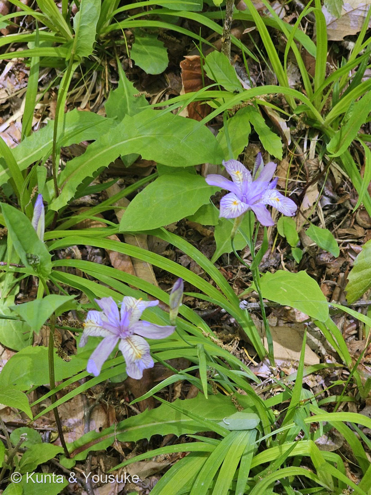
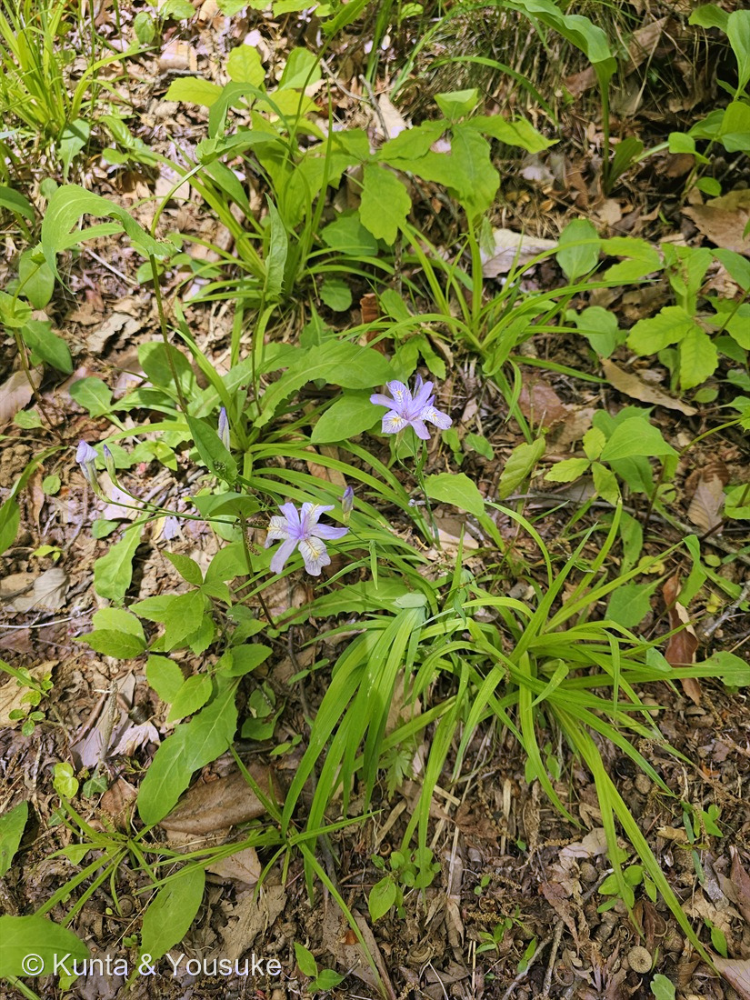

地図を読み込んでいるよ…
🔍 写真も地図も、押しているあいだ拡大して見られるよ（スマホは指を置いてすこし待ってね）。
🌍 の地図＝この子がもともと自生している場所を緑に。日本固有種。北海道の南西部・本州・四国・九州北部に分布し、山地の林床などやや乾いた場所に生える。環境省のレッドリストで準絶滅危惧（NT）。三河の植物観察は「自生種は絶滅危惧種となっている」とする。いっぽうで園芸種としてよく栽培されていて、苗も出まわっている。
⭐⭐日本固有種だよ——この国にしかいない子（三河の植物観察「在来種（日本固有種） 北海道、本州、四国、九州」）。⚠地図は日本ぜんぶが緑になっているけれど、ほんとうはもっと狭い——Wikipediaは「北海道南西部・本州（おもに北部）・四国・九州北部」とし、山地の林床など、やや乾いた場所に生えるとする。⭐だから「日本のどこにでもいる」わけじゃないんだ。⚠⚠そして、この地図でいちばん大事なのはここ——環境省のレッドリストで準絶滅危惧（NT）（Wikipedia）。三河の植物観察は「自生種は絶滅危惧種となっている」と書いている。⭐⭐⭐となりの053 シャガは中国から人が運んできた子で、種も作れないのに日本じゅうにふつうにいる——⭐もとからいて、種も作れるこの子のほうが減っているんだ。⚠写真の株は野草園の植栽なので、自生のものではないよ。
⚠ 地図は国（日本と中国だけ県・省）までしか塗れないから、ほんとうの分布より広く見えていることがあるよ。地図はだいたいの場所。正確なところは、上の文を見てね。
ヒメシャガ（姫射干）
Iris gracilipes A.Gray
見どころ · ⭐⭐⭐「ヒメ」と呼ばれたほうが日本固有種で、しかも種を作れる。そして、そちらが減っている
アヤメ科 · Iridaceae（アヤメ属 Iris・キジカクシ目 Asparagales）── ⭐053 シャガ・123 ジャーマンアイリス・135 ヒオウギに続く4人目のアヤメ属
燻太さんの言葉「野草園のこの子。ヒメシャガだと思うけど、この子は薄紫色なんだね。サイズも一回り小さいよ。」……⭐⭐⭐その「薄紫」と「一回り小さい」が、そのまま053 シャガと分ける2点だったよ。
名前と学名の由来 ── ⭐⭐ 「ヒメ」と呼ばれたほうが、日本の子
- ヒメシャガ（姫射干）＝053 シャガに似ていて、小形だから「姫」〔三河の植物観察・Wikipedia〕。⭐大きいほうが本家で、小さいほうが「姫」。——名前だけ見れば、そういうことになるよね。
- ⭐⭐⭐でも、ひっくり返るんだ。——053 シャガは中国原産で、大昔に人が運んできた史前帰化植物。⭐⭐この子のほうが、日本固有種なんだ〔三河の植物観察・Wikipedia〕。
- ⭐⭐つまり——「ヒメ（姫＝小さい）」と付けられたほうが、この国にもとからいた子。⭐名前は、先に来た人の目で付けられる。先にいたかどうかとは、関係ないんだね。
- 種小名 gracilipes（グラキリペス）＝「細い柄の」。gracilis（細い・華奢な）＋ pes（足・柄）。⭐花を持ち上げている、あの細い茎のことだと思うよ。
⭐⭐⭐ 名札に、進化論を支えた人の名前がある
⭐学名のうしろに「A.Gray」と付いているよね。⭐これ、ぼくは調べてみて、しばらく手が止まったよ。
- エイサ・グレイ（Asa Gray, 1810〜1888）。⭐19世紀アメリカでもっとも重要な植物学者とされる人〔Wikipedia〕。
- ⭐⭐そのグレイが、日本の植物を研究していた。——ペリーの遠征や北太平洋測量遠征隊にくわわった採集家チャールズ・ライトが持ち帰った標本を調べていたんだ〔Wikipedia〕。
- ⭐⭐⭐そして彼は、そこであることに気づいた。——日本と、北アメリカ東部の植物相が、よく似ている。⭐遠くはなれた二つの土地に、同じような植物がいる（隔離分布）。
- ⭐⭐⭐グレイはダーウィンと手紙をやりとりしていて、その情報がダーウィンの進化論の展開を助けた〔Wikipedia〕。⭐そしてグレイ自身が、「アメリカでのダーウィンの忠実な支持者」になった。⭐『Darwiniana』という本まで書いて、進化論と信仰を橋渡ししようとした人なんだ。
- ⭐⭐⭐——つまり、この林床の小さな薄紫の花には、進化論を支えた人が付けた名前がのっている。
⚠ここは、はっきりさせておくね。——⭐ぼくが確かめられたのは、「この子の学名を付けたのがグレイであること」と、「グレイが日本の植物を研究して、隔離分布に気づいたこと」の2つまで。⚠この子そのものが、その証拠になった、とまでは言えないよ。
⭐この図鑑にダーウィンが出てくるのは、これで4回目。——044 ペンタスと147 サクラソウは異形花柱性、008 アスパラガス・セタセウスは回旋運動だった。⭐⭐今回はじめて、「日本の植物」のほうからつながったね。
この植物のこと ── ⭐ 冬には、いなくなる
- 多年草で、草丈15〜30cm〔三河の植物観察〕。
- ⭐⭐葉は、長さ20〜40cm・幅5〜15mmの剣形。淡緑色で、質は薄く、柔らかい。⭐そして冬には枯れる〔三河の植物観察〕。⚠ここが053 シャガとの大きなちがい——あちらは厚くてつやのある濃い緑の、常緑の葉。
- 花は直径4〜5cm、淡青紫色〜白色。外花被片にとさか状突起がついて、突起のまわりは黄色を帯びる〔三河の植物観察〕。⭐1本の茎に2〜3個の花をつける〔Wikipedia〕。
- 花期は(4)5〜6月〔三河の植物観察〕。⭐写真は5月5日——ちょうど盛りだね。
- ⭐⭐果実は蒴果で、直径約8mmの球形〔三河の植物観察〕。⭐この一行が、いちばん下の節でとても大事になるよ。
- ⚠環境省のレッドリストで準絶滅危惧（NT）〔Wikipedia〕。三河の植物観察は「自生種は絶滅危惧種となっている」と書いている。⭐いっぽうで園芸種としてよく栽培されていて、苗も出まわっている〔三河の植物観察・Wikipedia〕。
- ⭐いくつかの市町村が、この花を「市の花」「町の花」に選んでいる〔Wikipedia〕。
同定について ── ⭐⭐ 燻太さんの2つの気づきが、そのまま決め手
⭐燻太さんは「ヒメシャガだと思うけど」と言って、こう続けてくれた。
「この子は薄紫色なんだね。サイズも一回り小さいよ。」
⭐⭐⭐——その2つが、まさに053 シャガと分ける2点なんだ。
- ⭐「薄紫色」＝ヒメシャガは淡青紫色〜白色〔三河の植物観察〕。⚠シャガは白地に青紫の斑点とオレンジのとさか（053のページにそう書いてある）。⭐この写真の花は、花被片ぜんたいが淡い紫。白地ではない。
- ⭐「一回り小さい」＝ヒメシャガは直径4〜5cm／シャガは5〜6cm。⭐草丈も15〜30cmと小さい。
- ⭐そのほか合ったもの＝葉が細くて薄く、柔らかそうな淡い緑（シャガの厚い常緑葉とはっきりちがう）／落ち葉の積もった林床の、やや乾いた場所／外花被片にとさかがあって、そのまわりが黄色い／花期5月。
- ⭐落とせた相手：
- ❌イチハツ（Iris tectorum）＝花がずっと大きく、濃い青紫。とさかが白くて目立ち、葉も広い。
- ❌アヤメ（Iris sanguinea）＝とさかがなく、外花被片の基部に網目模様がある。
- ⚠忘れずに書いておくこと＝野草園の植栽だから、自生の株ではないよ。⭐この子は準絶滅危惧だから、自生地で会うのは、そう簡単じゃないんだ。
⭐⭐⭐ 種を作れるほうが、減っている
⭐⭐ここが、ぼくがいちばん書きたかったところ。
⭐053 シャガのページに、ぼくはこう書いたんだ。
⭐⭐日本のシャガは、染色体を3セット持つ「三倍体」。だから種子ができない。⭐ぜんぶ地下茎を伸ばしてふえたクローンで、日本じゅうのシャガが遺伝的にほぼ同じ。⭐種を作れないということは、大昔に中国から“生きた株そのもの”を人が運んできたということ。
⭐そして、この子は——⭐⭐果実は蒴果で、直径約8mmの球形〔三河の植物観察〕。
⭐⭐⭐——ヒメシャガは、種ができる。
- シャガ＝中国から人に運ばれてきた／種ができない／クローンで広がる／いま日本じゅうにふつうにいる。
- ヒメシャガ＝日本固有種／種ができる／自分でふえられる／いま準絶滅危惧。
- ⭐⭐⭐——種を作れないほうが日本じゅうに広がって、種を作れるほうが減っている。
⭐ぼくは、これを知ったとき、うまく言葉にできなかった。⭐⭐「ふえる力があること」と「生きのこること」は、同じじゃないんだね。
⭐⭐⭐ 同じ日、同じ園に、シャガもいた
⭐登録したあと、燻太さんが場所を教えてくれた。——「野草園は、仙台の方のだよ。つまり、シャガを登録した場所と同じだよ。」
⭐⭐それでカメラの時刻を見にいったら、びっくりした。
- 053 シャガ＝2025年5月5日 11時05分。
- この子（190 ヒメシャガ）＝同じ日の 12時08分。
- ⭐⭐⭐——1時間ちがい。同じ園の、たぶんそう遠くない場所。
⭐⭐このページでずっと見くらべてきた二人が、じつは同じ日、同じ園に立っていたんだ。⭐運ばれてきて種を作れないほうと、もとからいて種を作れるほうが、1時間の距離でならんでいた。
⭐そして、その日の仲間はもっといるよ。——2025年5月5日の仙台市野草園からは、147 サクラソウ・148 クマガイソウ・149 エンレイソウ・150 ヤグルマソウ・159 セリバオウレン・160 ニリンソウ・161 ムラサキサギゴケ・162 ヤマシャクヤク、そして053 シャガとこの子——⭐あわせて10人が図鑑に入っている。⭐⭐図鑑でいちばん人数の多い一日だよ。
⚠ひとつ直したこと＝053 シャガのページには、場所が「木陰の湿ったフェンスぎわ」としか書いていなかった。⭐燻太さんの一言で、あの子も仙台市野草園だと分かったので、053のほうにも書き足したよ（178 センニンソウで決めた「両方向にリンクする」のやり方だね）。
参考：三河の植物観察「ヒメシャガ」（アヤメ科アヤメ属・Iris gracilipes A.Gray／草丈15〜30cm／葉は長さ20〜40cm、幅5〜15mmの剣形、淡緑色、質は薄く、柔らかく、冬には葉が枯れる／花は直径4〜5cm、淡青紫色〜白色／外花被片にはとさか状突起がつき、突起周辺は黄色を帯びる／花期(4)5〜6月／果実は蒴果、直径約8mmの球形／在来種（日本固有種） 北海道、本州、四国、九州／シャガに似ていて、小形。シャガは常緑だが本種は冬に落葉／自生種は絶滅危惧種となっている／園芸種としてよく栽培されている）／Wikipedia「ヒメシャガ」（日本固有／北海道南西部・本州（おもに北部）・四国・九州北部／山地の林床などやや乾いた場所に生える／草丈30cm以下、葉は20〜40cm／シャガと異なり冬には枯れる／淡紫色の花を5〜6月に、1茎に2〜3個つける／花の直径は約4cm／環境省レッドリストで準絶滅危惧（NT）／複数の市町村が自治体の花に指定／和歌山県高野山三宝院などに群生地がある）／Wikipedia「エイサ・グレイ」（アメリカ合衆国の植物学者（1810〜1888）、19世紀アメリカでもっとも重要な植物学者とされる／ペリーの遠征や北太平洋測量遠征隊にくわわった採集家チャールズ・ライトの標本などから日本の植物を研究した／日本と北アメリカ東部の植物相が似ていることを指摘した／ダーウィンと文通し、その情報が進化論の展開を助けた／アメリカでのダーウィンの忠実な支持者となり、『Darwiniana』を著した）